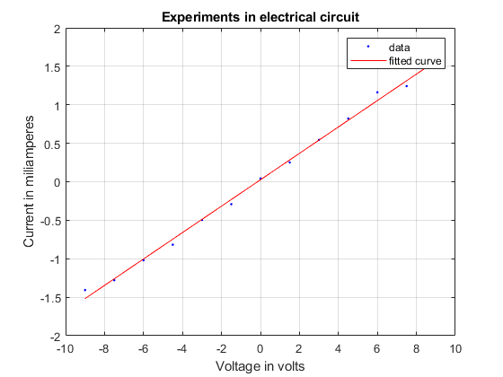

Contents
clear all;
data = xlsread('experimental.csv');
x = data(:,1);
y = data(:,2);
[f gof] = fit(data(:,1),data(:,2),'poly1');
figure(1);
plot(f,x,y)
title('Experiments in electrical circuit')
xlabel('Voltage in volts')
ylabel('Current in miliamperes')
grid on;

Calculating cotangent which is resistance of the resistor
x2 = 1;
x1 = 0.99999999;
y2 = f(x2);
y1 = f(x1);
res = (x2-x1)/(y2-y1);
fprintf('The average estimated resistance is %f ohm \n',res)
The average estimated resistance is 5.829472 ohm
Estimating confidence interval
disp('Confidence interval linear model with %95 accuracy')
cis = confint(f);
fprintf('%d < p1 < %d \n',cis(1,1),cis(1,2))
fprintf('%d < p2 < %d',cis(2,1),cis(2,2))
Confidence interval linear model with %95 accuracy
1.649862e-01 < p1 < -1.048729e-02
1.780980e-01 < p2 < 6.310267e-02